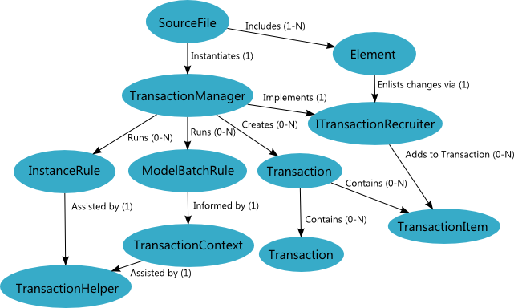
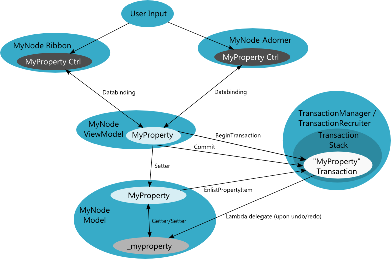

The Transaction System
The Diagram SDK transaction system is responsible for managing changes to the Diagram Object Model (DiOM), preventing model corruption, notifying listeners when model changes have been committed, managing undo and redo operations, and assisting in the coordination of name resolution. The transaction system is an essential part of the Diagram SDK, as the DiOM can only be modified from within a transaction.
Transaction System Architecture
The following diagram illustrates the relationships between the primary classes that participate in the transaction system.

Transaction System Theory of Operation
The SourceFile's TransactionManager must manage all changes to the Diagram Object Model. Whenever the end user makes changes to a model Element (for example, modifying a property or reparenting the element), the element must record the change as a TransactionItem within a Transaction. The typical sequence of events in a transaction is:
- A Transaction is created by calling TransactionManager.BeginTransaction or TransactionManager.BeginAsyncTransaction.
- Related TransactionItems are recorded through the ITransactionRecruiter interface.
- The changes are committed by calling Transaction.Commit on the Transaction returned by the begin call. Active transactions that have not yet been committed can be cancelled to roll them back.
- During the commit operation, the TransactionManager performs validation and runs Rules to ensure the changes will not corrupt the Diagram Object Model. This process yields one of the following results, reflected in the TransactionChangeReason enumeration, which you can access through the TransactionManager.TransactionLogger.TransactionResult property:
- TransactionChangeReason.Completed—The transaction completed successfully.
- TransactionChangeReason.RuleFailed—The transaction was aborted due to a rule violation.
- TransactionChangeReason.ValidationFailed—The transaction was aborted due to validation failure.
- The TransactionManager fires the TransactionCommitted event to notify objects that have registered event handlers tied to this event.
- The TransactionManager adds the Transaction to its stack of committed transactions so that the changes can be undone and redone at the end user's request.
Property Change Example
Assume you have a node, MyNode, with a property, MyProperty, that the user decides to change using the node's adorner or ribbon group. Following the MVVM pattern, the View controls that expose the property to the user interface are bound to a property in the Node's ViewModel. The ViewModel's property setter is responsible for beginning the transaction, setting the corresponding model Element property, and committing the transaction, as shown in the following example code.
set
{
using (var myPropertyTransaction = TransactionManager.BeginTransaction("MyProperty", TransactionPurpose.User))
{
foreach (MyElementType model in _models)
{
model.MyProperty = value;
}
myPropertyTransaction.Commit();
}
}
The Model's property setter is responsible for enlisting the property change with the TransactionRecruiter.
set
{
int oldMyProperty = _myProperty;
_myProperty = value;
TransactionRecruiter.EnlistPropertyItem(this, "MyProperty", oldMyProperty, _myProperty, (c, _) => _myProperty = c, TransactionHints.Semantic);
}
The following diagram illustrates the interactions between the View, ViewModel, Model, and Transaction system in the preceding example. The arrows indicate data transfers that unfold sequentially, roughly from top to bottom.

Creating Nested Transactions
Nested transactions are created by nesting calls to TransactionManager.BeginTransaction. When you call BeginTransaction within a transaction, one transaction gets nested within the other and the inner transaction could subsequently have more nested transactions within it. Nested transactions must be committed in the reverse order in which they were begun, so the most nested transaction must be committed before its outer transaction is committed and so on. Committing nested and outer transactions out of order will cause the system to throw an exception.
Mixing Transactions with Transaction Items
A Transaction can either contain nested Transactions or it can contain TransactionItems, but the two cannot be mixed. The tools supplied by the Diagram SDK typically begin an outermost Transaction that contains only nested Transactions, and these nested Transactions are where the actual property and parent change TransactionItems reside.
Undoing and Redoing Transactions
User transactions imply that they are undo/redo markers, meaning that an undo will undo all committed transactions up to and including the most recent user transaction. User transactions are therefore used for changes made due to direct user actions, such as resize, wiring, movement, placement, deletion, and so on, while the other kinds of TransactionPurposes are for non-user changes, such as programmatic modifications, load/save, rule side-effects, etc.
You can use the TransactionManager.IsDirty property to determine whether there are any unsaved, committed transactions in the TransactionManager. You can use the TransactionManager.SetLastUserTransactionAsSaveMarker method to tell the TransactionManager whether the last TransactionPurpose.User transaction should be treated as a save marker.
Asynchronous Transactions
Asynchronous transactions are supported via the ITransactionManager.BeginAsyncTransaction. User interface components often make use of asynchronous transactions for open-ended changes where explicit control for ending the transaction is not possible. For example, when the user is entering string data into a text box but then decides to click on a button or ribbon element (e.g. a checkbox), the string data entry transaction should be an asynchronous one. That way, when the button click or checkbox click action triggers a call to ITransactionManager.BeginTransaction with TransactionPurpose.User, the new transaction will first end any asynchronous transactions that remain uncommitted before proceeding with its own transacted actions.
Working with ViewModels
For many common tool-initiated actions, such as move, resize and wiring, a revert-previous-nested/commit-new-nested pattern (Revert-Previous) is used where first an outer transaction is begun, say, to resize a node, and then within that outer transaction a nested transaction is begun and the width and height transaction item changes are made. The next time the mouse moves, the resize tool reverts the previous nested transaction and creates a new nested transaction that sets the width and height to the new mouse location, then commits. This pattern simplifies long-running operations by reducing the number of Transactions and TransactionItems that are created and stored. This, in turn, simplifies rule execution by limiting the number of TransactionItems the rules must analyze. For example, in this case, the TransactionManager does not run rules against the intermediate width and height changes.
To take advantage of the Revert-Previous pattern in a View, call BeginAtomicAction within a using block before reverting the previous nested Transaction and committing the new nested Transaction. When the atomic action IDisposable object is disposed, it will notify that it is complete and ViewModels listening for these changes will know that they can safely process the changes sent to them. The atomic action essentially batches the revert-commit changes to avoid performing unnecessary work on intermediate updates.
Reacting to Transaction Completion
To react to outermost transaction completions, register for the ITransactionManager.TransactionStateChanged event, which fires just after the commit is finished on an outermost transaction, as well as after a transaction is undone or redone. For example, in Web UI Builder, semantic analysis hooks into this event and runs its type propagation algorithm in response to it, since it knows that some change has just completed that might have changed the model. Any transactions begun and committed in a handler hooked into this event will go onto the committed transactions stack just above the outer transaction for which the event was sent out. Thus, any resulting transactions will not be nested in the original transaction but will be their own top-level transactions.
Rules
Rules execute when a transaction is committed to ensure consistency of the object model. Rules analyze changes made by a transaction and either accept them, coerce them, reject them, or add additional changes to the transaction. All Rules must ultimately derive from the ModelBatchRule abstract base class.
Rule Registration
There are two ways to add rules to a model:
- You can statically set a collection of rules on the IModel.ModelBatchRules property
- You can register and export rules through the plug-in system. Exported rules are dynamically imported at run-time by each TransactionManager.
Rule Creation and Execution Time
Rules are instanced either by the IModel implementing class in its ModelBatchRules property or by MEF if the rule is exported through that means. The TransactionManager holds onto the rule instances and calls their Execute methods during transaction commits.
All instanced rules run each time the TransactionManager commits a transaction, except in the case of an outer transaction that contains only nested transactions. In this case, the rules are not passed any items because all the work that rules would do on the transaction items should have already been done in the commits of those individual nested transactions (the ones that contained the transaction items). If you need to make more changes upon the commit of the outermost transaction, you can register an event handler for the ITransactionManager.OutermostTransactionEnding event. In that handler, they are still within the outermost transaction and can record more changes. Rules will then run on those changes, potentially recording even more changes, and the OutermostTransactionEnding event will fire again with the new changes until the event handler makes no more changes.
Data Available at Rule Execution Time
The TransactionManager passes each Rule the full list of transaction items that comprise a transaction. Each Rule then filters this list (often using LINQ statements) to remove TransactionItems it does not care about and then takes action based on the filtered subset of TransactionItems. A TransactionContext is also passed in which contains helpful information like the parent transaction of the items, an ITransactionHelper interface useful for filtering items, a TransactionDictionary by which arbitrary information can be passed between your code and rules and from rule to rule, and a mechanism for reporting Messages, such as errors.
Each TransactionItem passed to the rules contains information about the model element that was modified and the old and new values. If the TransactionItem is a property change, the old and new values for that property are available. For a parenting transaction item, the old parent and new parent are included (with the TargetElement of the item being the child upon which the parenting operation occurred). Because the transaction system collapses all transaction items before passing them to the rules, the rule can assume that each item’s old and new value represent the original and most recent value for the element’s property within that transaction. Parent-child transaction items are not collapsed and so a rule could potentially get multiple reparent transaction items for the same model element within the same set of items. It is possible to execute multiple re-parenting operations in one transaction, but this is not a good practice.
Rule Execution Passes
Since rules can add their own model changes to the transaction, it is necessary to run multiple passes of all the rules until the system settles. For example, assume the first pass of rule executions adds ten new changes to the transaction. The rule execution system will then make a second pass, executing all rules again, passing in those ten new TransactionItems. This process continues until the system has settled, meaning none of the instanced rules adds new TransactionItems. This multi-pass algorithm ensures that every rule has a chance to examine all the changes made by every other rule.
Rule Execution Return Values
Every Rule returns a TransactionResultStatus from its Execute method. Normally, the rules either accept, add onto, or coerce the changes passed into them, returning a Success or AllowableError return result. However, if a Rule detects model changes so unexpected that they cannot be coerced, it should return FatalError, causing the entire transaction to fail and all changes to be rolled back.
Primary Types that Participate in the Transaction System
The following types comprise the backbone of the Diagram SDK transaction system.
ITransactionManager
The [ITransactionManager][ITransactionManagerRef] interface is implemented by the TransactionManager class, which also implements ITransactionRecruiter and is the only rooted recruiter in our system.
Each SourceFile creates a TransactionManager to manage its transactions. To make valid changes to a SourceFile’s contents, you must use its TransactionManager. The TransactionManager is responsible for recording the changes, running associated rules, and sending out notifications of the changes.
ITransactionRecruiter
The ITransactionRecruiter adds TransactionItems to a Transaction, to be recorded for event notification, undo, and redo. Property transaction items and parent-child transaction items are the main kinds that are enlisted.
There are two types of ITransactionRecruiters: Rooted and Unrooted. The UnrootedRecruiter class implements this interface and is Unrooted. The TransactionManager class also implements this interface and is rooted, because it is attached to a SourceFile and is the same class that runs rules on these transactions, undoes and redoes them, notifies that they happened, etc.
When touch and instance rules are registered on an unrooted recruiter, those rules are stored and then registered with the rooted recruiter when the unrooted recruiter's element is connected to the rooted element graph (i.e. under a SourceFile). The transaction items added to the unrooted recruiter are also then added to the rooted recruiter so that rules will run on them when the parent transaction is committed, but then all of those merged items are discarded (they were marked as DiscardOnCommit) because they should not be able to be individually undone since they are considered to be part of the atomic state of the model elements before they were added to the main graph.
IActiveTransaction
The IActiveTransaction interface is returned from ITransactionManager.BeginTransaction and represents a transaction that is in progress and which can contain individual transaction items; this transaction can either be an outermost one or a nested one.
ICompletedTransaction
The ICompletedTransaction interface is returned from IActiveTransaction.Commit. A completed transaction can either be an outermost or a nested transaction. This interface is used in several ITransactionManager methods for rollback/recommit purposes.
Element
The Element class is used to access the ITransactionManager and ITransactionRecruiter. The Element class also participates in the following features: Diagram Object Model, Message Reporting, and Names and Name Resolution.
SourceFile
The SourceFile class is important to the transaction system because it contains exactly one ITransactionManager and so is the normal top-most element for all transactions occurring on its child elements. Further, a particular set of model rules are collected by its TransactionManager based on which IModel(s) are under the SourceFile, and only this set of rules are run by the TransactionManager for changes made to model objects under the SourceFile.
ModelBatchRule
ModelBatchRule is the base class for all rules in the SDK's model system. These rules can be registered via the IModel ModelBatchRules property or by using MEF export tags above a ModelBatchRule class. When the component containing the MEF-exported batch rule is loaded, its rules will be dynamically registered with the TransactionManager in which its IModel lives. These rules are executed by the TransactionManager everytime a transaction is committed, and the rules are passed every transaction item as a list so that each rule can intelligently filter them and take action only on ones it cares about.
InstanceRule
InstanceRules derive from ModelBatchRule and add two properties: the registering element and the target element. The idea of these rules is that you might care about a particular instance changing (the target element) and the rule would also need to know which element cared about that target element changing (the registering element). InstanceRules make it possible for transactions to span multiple ITransactionManagers (and therefore span multiple SourceFiles); this occurs when the registering and target elements are in different SourceFiles. You can derive from this class to create your own InstanceRules, though they are still responsible for filtering the batched set of transaction items passed into them.
ITransactionHelper
The ITransactionHelper interface is available on the TransactionContext passed into rules' Execute method and helps rules filter transaction items down to the ones they care about.
TransactionContext
The TransactionContext provides services and information for rules' Execute method.